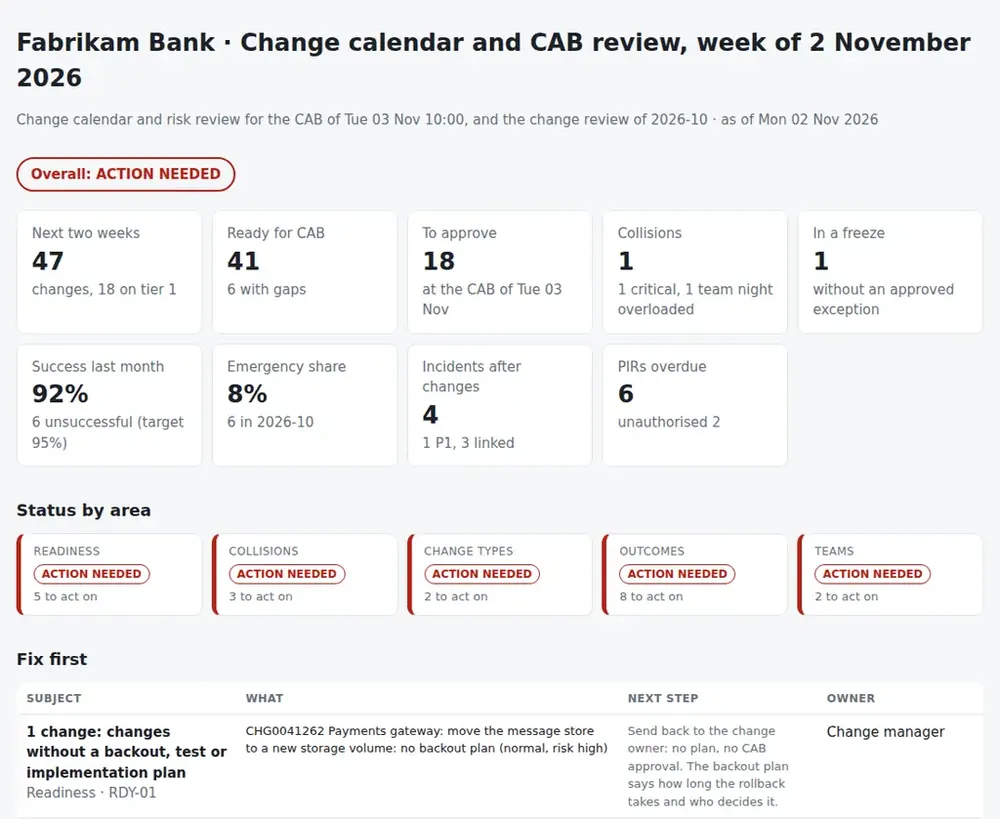

The data centre firewalls and the core switches are due to be upgraded the same night by two different teams, both in the path of the trading platform, and a database patch on that platform is booked inside the month-end close freeze. That is what the change calendar review published with this post finds. It is an open-source tool that runs on demo data from a made-up bank with a trading floor, reviewed on a Monday morning before the CAB, the change advisory board that approves changes, with the problems placed on purpose.
The change calendar in the ITSM tool is a list, and the CAB approves each change on its own merits. The list does not show how the changes relate to each other or to the rest of the month. The tool works out the impact of each change through the dependency map of 16 business services in three tiers, so a change on the core network collides with anything on the services that depend on it.
A high-risk change with no backout plan, raised two days before its window
The readiness checks find a high-risk change raised two days before its window with no backout plan, the steps to undo it if it goes wrong. The review flags changes without a backout, test or implementation plan, with the risk not assessed or below what the impact and the tier of the service suggest, raised inside the lead time, not approved when they start before the CAB, without an owner or outside the maintenance window of their tier.
A firmware upgrade on the storage of critical services is booked as a standard change, the pre-approved kind meant for routine work, so it never reaches the CAB. One team raises more emergency changes every month for the same reasons, and the tool shows the emergency share by month, its reasons and emergencies never approved afterwards.
A change closed as successful two hours before a P1 at the market open
The other half of the review looks back. One change was closed as successful two hours before a P1, a top-priority incident, at the market open, and no post-implementation review was booked. The tool measures last month's success rate and trend, unsuccessful changes, incidents linked to a change or opened on the same service within hours of one, overruns, unauthorised work, overdue reviews and the teams with a low success rate or rising emergencies.
How to use it with real data
The repository includes a read-only PowerShell exporter for the ServiceNow Table API, covering changes, incidents, approvals and the service map. It runs on Python with only the standard library and produces a web report with a two-week calendar by day and service where collisions, freezes and gaps stand out, a CAB agenda with the monthly review, and CSV files for every area. The demo holds 263 change requests from nine teams, three months of history and the next two weeks, and a freeze register with the month-end close and an index rebalance, all fictional. It comes with 15 tests and a runbook.
Where it comes from
The tool comes from being process owner for incidents, changes and problems, taking part in CABs and go-live reviews, release management, writing runbooks and training others, leading the technical response in major incidents, and working with ServiceNow, EasyVista, HaloITSM, Jira and Confluence. The lesson behind it: two changes on the same path the same night mean two backout plans for one symptom, and a change followed by a P1 is not a success, however it was closed.
Want to bring it to your environment or adapt it to your case? Get in touch and we can look at it together.
Tech Career Lab · newsletter
Found this useful? Every two weeks I send one practical idea for IT professionals: LinkedIn, projects, networking and hiring processes.
Sign up and get the 33 ideas →